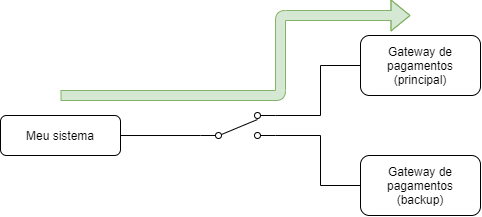
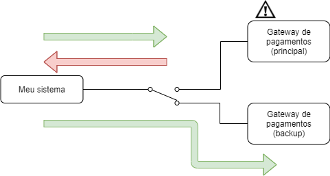

Estratégias de Resiliência - Circuit Breaker
Élysson MR - Squad Pagamentos Ecomm
Tópicos
- Introdução
- O que é uma aplicação resiliente?
- O design Pattern Circuit Breaker
- Exemplo prático
- Conclusão
Introdução
- Micro-serviços se conectam uns aos outros utilizando a rede
- O que faremos caso um dos nós falhe? Vamos deixar todas as aplicações falhem juntas?
- Como podemos tolerar erros na comunicação com outros serviços?
- Existem diversas estratégias para manter as aplicações funcionando
O que é uma aplicação resiliente?
- É uma aplicação que saiba lidar com as falhas se recuperando delas para continuar o funcionamento
-
Uma aplicação pode se recuperar de 2 formas:
- Totalmente -> ela mantém todos os serviços em funcionamento sem o usuário perceber que houve uma falha
- Com Degradação -> alguns serviços são oferecidos de forma limitada (graceful degradation)
O que é uma aplicação resiliente?
-
Existem 3 tipos de falhas:
- Transientes -> Ocorrem uma vez e demora para ocorrer de novo. Ex: Falta de internet
- Intermitentes -> Falhas transientes e ocorrem repetidamente. Ex: Timeouts de requests devido a rede lenta
- Permanentes -> Quando ocorrem permanecem até que alguma ação seja tomada. Ex: O servidor de aplicação cair
O design pattern Circuit Breaker
- Bem parecido com o conceito de instalações elétricas
- Quando determinada situação ocorre o Circuit Breaker abre protegendo o restante dos micro-serviços (circuito)
- Essa estratégia é utilizada para poder não degradar o nosso sistema
- Com a abertura do CB podemos tomar uma ação diferente ou retornar um erro direto
O design pattern Circuit Breaker
- Nós devemos envolver a chamada de um recurso caro com a implementação do Circuit Breaker
- Esse objeto irá monitorar os erros (pode ser mais de um tipo) para abrir o CB
- Pode-se configurar um tempo para podermos “armar” novamente o Circuit Breaker automaticamente
O design pattern Circuit Breaker
Exemplo1: Usamos um serviço de envio de emails para nossos clientes, porém ele esta retornando muitos timeouts.

O design pattern Circuit Breaker
Exemplo2: Precisamos processar os pagamentos das assinaturas, mas o serviço principal (mais barato) está com problemas . Para não ficar muito tempo sem vender ($$$), vamos utilizar outro serviço (mais caro) como backup por um tempo ($$).
O design pattern Circuit Breaker
Fluxo Normal O design pattern Circuit Breaker
Fluxo Backup Ativo Exemplo Prático
- Dois apps em flask simples, para demostrar como a técnica funciona.
- Vamos executar um teste de carga com o Locust para podemos simular o CB abrindo.
- Que nossa senhora do live code nos abençoe! 🙏
Conclusão
- Utilizando o Circuit Breaker podemos não onerar muito o nosso(s) sistema(s)
- Utilizar somente o CB para evitar erros pode não ser algo interessante para o negócio
- O padrão é simples e bem eficiente permitindo a utilização em diversas partes do sistema
Para saber mais:
- https://martinfowler.com/bliki/CircuitBreaker.html
- https://en.wikipedia.org/wiki/Circuit_breaker_design_pattern
- https://imasters.com.br/desenvolvimento/criando-aplicacoes-resilientes-uma-visao-geral
- https://www.infoq.com/br/presentations/construindo-aplicacoes-resilientes/
- https://pypi.org/project/pybreaker/
- https://pypi.org/project/lasier/
Obrigado!!
Slack: @elysson.rezende